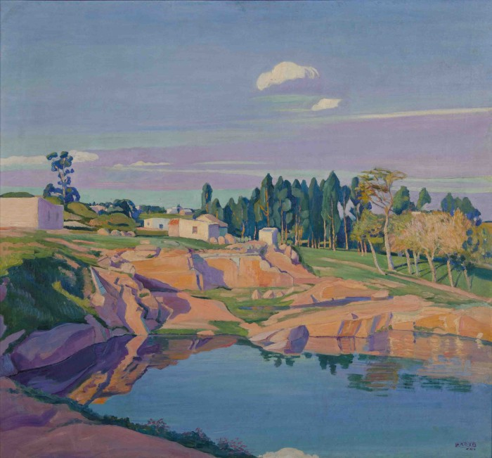

En la caminata de un verano fugaz que sorprendió en medio de Agosto, te vi a vos, te vi reflejada en ese vidrio con los ojos iluminados por una pecera que parecía puesta como que sin querer en un local de vaya uno a saber qué, porque la verdad es que no importa. El calor se te notaba en las mejillas coloradas por el alcohol y por el andar ligero en callecitas de Montevideo. La señal de un día movido se vislumbraba en los pelos que escapaban de la colita alta que sujetaba el pelo rubio. “No te pierdas” me dije. Cada tanto me lo digo porque es importante no perderse, independientemente de las calles donde estamos parados. A veces me olvido de mi y de la espontaneidad de una sonrisa que pueden provocar dos peces naranjas en la oscuridad de una calle de Montevideo. No te pierdas, no te pierdas, no te pierdas.
Las casas de Montevideo huelen a humedad. Y es que si usted se fija, dama, caballero, las ventanas están cerradas o sus persianas apenas dejan vislumbrar el interior de la vivienda. Cuando camina por una calle transitada es poco frecuente ver balcones dándole la bienvenida al sol o la ventana abierta de par en par dejando pasar la brisa que remueve los olores que se acumulan con el paso de los años. Las casas son frías, como si dentro habitaran almas que quedaron rezagadas en el transcurso del tiempo y se situaron en la comodidad de algún sillón. Últimamente acarreo el mismo pensamiento de por qué tanto misterio, si es por el ruido, si es porque no están los dueños y temen al hurto, o si es porque nadie se anima a mostrar lo más íntimo en la vida que es su propia casa. Como si con abrir las ventanas también se abrieran los corazones y fuéramos vulnerables a mostrarnos y a dejar que el sol nos acaricie el alma. Reflexiono porque pienso en el olor a humedad y en las persianas bajas y en si no hay mucha gente que por no abrirse deja que su interior se vaya haciendo cada vez más gélido. Y pienso si alguien sentirá el calorcito que yo siento cada vez que veo las canteras que un día Manuel eligió pintar.